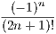
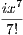
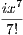

-
-Imagino que a compreensão do porquê dessa fórmula dependa do seu nível de conhecimento. Primeiro exporei uma maneira mais prática para a existência de tal fórmula, depois algo mais rigoroso, uma demonstração.
A ”equação divina” sai diretamente se usarmos a definição da fórmula de Euler (para quem não sabe, é uma constante, o número de Euler, ):
|
| (1) |
i.e., na ”equação divina”:
| eiπ + 1 = 0 | (2) | |
| cos(π) + isen(π) + 1 = 0 | (3) | |
| - 1 + 1 = 0 | (4) |
Mas de onde vem a tal fórmula de Euler (1)?
Vejamos o problema de um ponto de vista mais prático. É bastante irritante termos de lidar com senos de cossenos toda vez que queiramos fazer contas com números complexos (aliás, que nome horrível para um conjunto de números...), é muito imprático fazer contas de multiplicação por exemplo. Mas e se pudéssemos representá-los na base de algum número, como uma exponencial? As multiplicações seriam muito mais fáceis, seria somente necessário somar os expoentes.
Para chegar em tal fórmula, primeiro poderíamos utilizar aproximações para as fórmulas do seno e cosseno. Pelas séries de Maclaurin, temos que:
| cos(x) | = ∑
n=0+∞ = 1 - + - | (5) |
| sen(x) | = ∑ n=0+∞ = x - + - | (6) |
Sendo assim, podemos escrever:
|
| (7) |
Se rearranjarmos e organizarmos, chegamos a:
| cos(x) + isen(x) | = 1 + ix - - + + - - + + - + + - - + + | (8) |
= 1 + ix + + + + + + + +  | (9) |
Finalmente, utilizando a definição de , temos:
|
| (10) |
Infelizmente precisaremos de algum Cálculo elementar...
A nossa intenção é achar uma fórmula do tipo:
|
| (11) |
Escolhemos a base para a representação exponencial pois é a melhor base para se fazer cálculo, é a linguagem natural das derivadas e integrais. e são incógnitas, uma vez que, na representação polar, não sabemos qual raio ou se há algum desvio angular para a representação exponencial com .
Derivando 11:
|
| (12) |
Substituindo , temos que:
|
| (13) |
Rearranjando,
|
| (14) |
Isso força:
|
| (15) |
Ou seja, e , onde e são constantes quais quer.
Além disso, os valores iniciais e , anulam as constantes e . Sendo assim, chegamos finalmente a:
|
| (16) |